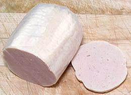
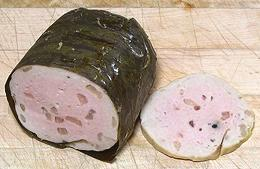
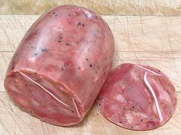
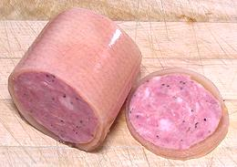
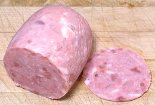
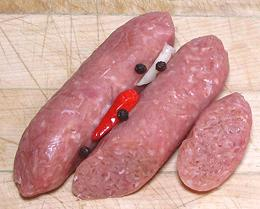

SAFARI
Users
Gio Lua
- (Fully Cooked) - [Silky Pork Roll]
This is the most widely eaten sausage in Vietnam, sometimes called
"Vietnamese mortadella". It is typically 2-7/8 inches diameter and
4 inches long, weighing 12 ounces. It was Purchased from a large Asian
market in Los Angeles (San Gabriel) for 2017 US $2.50 each - on Sale,
probably usually around $3.49. Ing: Pork, modified tapioca starch,
water, anchovy flavored fish sauce, corn starch, monosodium glutamate,
sugar, sodium tripolyphosphate, egg white, baking powder, potato starch,
pepper, garlic.
Gio Bi Sausage
- (Fully Cooked) - [Pork Meat Loaf with Pork Skins Added]
This is a popular pork sausage. The photo specimen, made in the
traditional way, wrapped in banana leaf was 2-3/4 inches diameter
and weighed 12 ounces. Pork skins are included in a number of Vietnamese
sausages, adding a firm gelatinous texture which I rather like.
It was Purchased from a large Asian market in Los Angeles (San Gabriel)
for 2017 US $3.99 each. Ing: Pork, pork skin, modified tapioca starch,
water, anchovy flavored fish sauce (water, anchovy extract, salt,
sugar) cornstarch, monosodium glutamate, sugar, sodium tripolyphosphate,
salt, baking powder, potato starch, pepper, garlic.
Gio Thu Sausage
- (Fully Cooked) - [Vietnamese Head Cheese]
Head Cheese is quite popular in Vietnam, but made a bit differently
from in Europe and North America. It has less gelatin and includes pork
ears with crunchy cartilage (white streaks). The photo specimen was
2-3/4 inches diameter and weighed 13 ounces. It was Purchased from a
large Asian market in Los Angeles (San Gabriel) for 2017 US $3.99 each.
Ing: Pork ears, pork snouts, pork, water, sugar, potato starch,
monosodium glutamate, salt, garlic powder, pepper, curing salt (salt,
sodium nitrite 6.25%, FD&C #40), black pepper, shallot, sodium
tripolyphosphate, sodium erythorbate, spice, FD&C red #40.
Thit Doi Heo
- (Fully Cooked) - [Cured Pork Roll]
This Pork Roll is based on ham (cured pork) rather than Gio paste.
Vietnamese do like to include pork skin in sausages, and in this case
the sausage not only includes it, it's wrapped in it. I like these
because I do like the firm gelatinous texture of pork skins, and this
one has plenty. It is a little more difficult to eat in Banh Mi
sandwiches though, because the skin is a little tough and needs a
firm bite. The photo specimen was 2-7/8 inches diameter and weighed
13 ounces.Ing: Pork, pork skin, water, potato starch, tapioca flour,
sugar, monosodium glutamate, salt, garlic powder, dried onion, black
pepper, white pepper, curing salt (salt, sodium nitrite 6.25&, FD&C
red #40) sodium tripolyphosphate, sodium erythorbate, spice, food
color FD&C red #40.
Thit Nguoi
- (Fully Cooked) - [Chopped Ham with Natural Juices]
This is another sausage based on ham rather than Gio paste. The photo
specimen was 2-3/4 inches diameter and weighed 12 ounces. Ing:
Pork, water, sugar, salt, monosodium glutamate, cornstarch, cooking
wine (water, rice, wheat, salt caramel), sodium tripolyphosphate,
modified tapioca starch, Prague powder (salt, sodium nitrite max 6.25%,
FD&C red #40), white pepper, garlic, nutmeg, sodium erythorbate.
Nem Chua
- (Semi-Cured) - [Nam Sausage]
This small sausage has a firm, slightly gelatinous texture due to
pork skin included. It is fairly garlicky with a distinct chili taste,
but very little heat. It needs to be cooked before consumption and is
probably used as an ingredient in stir fries and the like, very
similarly to Chorizo de Bilbao in the Philippines (also a semi-cured
sausage). The photo specimens were 4-1/8 inches long and 1.2 inches
diameter, weighing 2 ounces each. Ing: Pork, pork rinds, sugar, salt,
monosodium glutamate, garlic, potato starch, baking powder, sodium
tripolyphosphate, pepper, chili, glucono delta lactone, sodium
erythorbate, sodium nitrite.